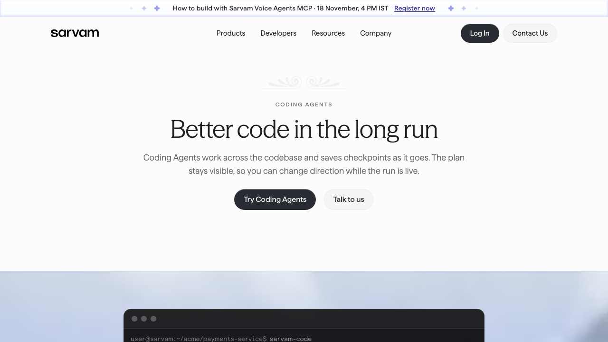
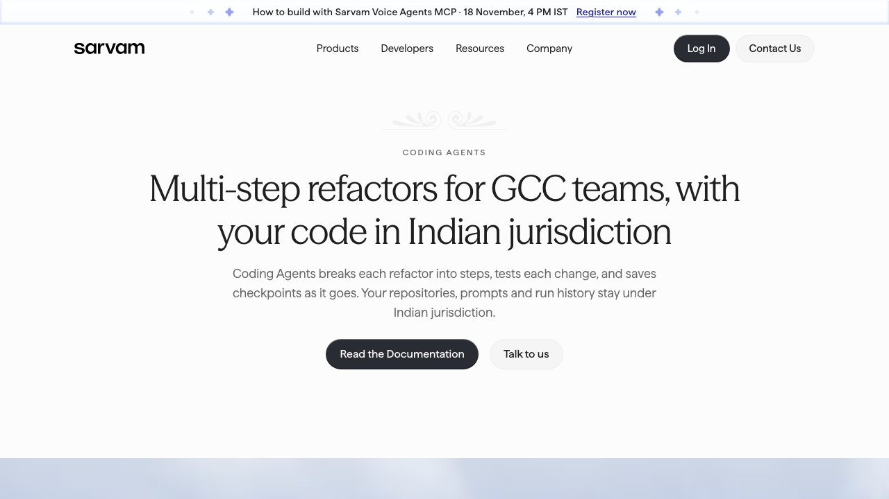

| Part | Baseline | Variant |
|---|---|---|
| H1 | Better code in the long run | Multi-step refactors for GCC teams, with your code in Indian jurisdiction |
| Sub-line | Coding Agents work across the codebase and saves checkpoints as it goes. The plan stays visible, so you can change direction while the run is live. | Coding Agents breaks each refactor into steps, tests each change, and saves checkpoints as it goes. Your repositories, prompts and run history stay under Indian jurisdiction. |
| Button | Try Coding Agents | Read the Documentation (goes to: docs) |